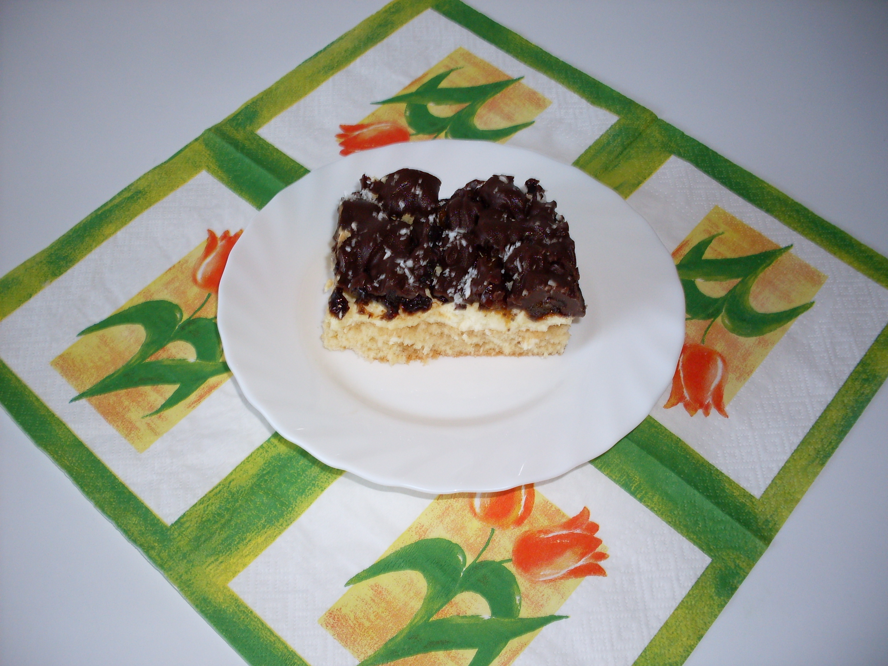

Sałatka z brokułami, fetą i prażonym słonecznikiem
Tort bezowo-lodowy
Schłodzoną śmietanę ubijamy. Po chwili ubijania dodajemy (nie przerywając ubijania) cukier, cukier waniliowy i śmietan-fix'y. Smarujemy tłuszczem średnią tortownicę i układamy pierwszą warstwę bezów, a na to ubitą śmietanę. Następnie układamy drugą warstwę bezów i ponownie ubitą śmietanę. Trzecią warstwę bezów kładziemy odwrotnie i robimy dekorację. Tort wstawiamy do zamrażalnika na ok. 1 godz. Po upływie 1 godz. zdejmujemy bok tortownicy - boki tortu smarujemy śmietaną i obsypujemy pokruszonymi na niewielkie kawałki bezami.
D ... Pawiana :)
Na samym początku (najlepiej na dzień przed) należy upiec lub kupić biszkopt.
3 galaretki rozpuścić w 4 szklankach wody. Na biszkopt układamy przekrojone na pół "murzynki". Twarożki trzeba zmiksować i dodać tężejącą galaretkę. Bardzo dokładnie wymieszać i wylać na "murzynki". Na wierzch wyłożyć ubitą razem ze śmietan-fix'ami śmietanę. Posypać czekoladą - startą na tarce na jak najdrobniejszych oczkach.
Filadelfia
Suchary pokruszyć prawie na pył i bardzo dobrze wymieszać z roztopionym wcześniej kremem czekoladowym. Całość wyłożyć na blachę i z lekka "przyklepać". Ubić śmietanę - pod koniec ubijania, jak śmietana będzie już prawie ubita, dodać cukier waniliowy, śmietan-fix'y i serki homogenizowane. Całość wyłożyć na blachę i posypać płatkami migdałowymi, wyłożyć owoce. Galaretki rozpuścić w 1 litrze wody. Po ostygnięciu i zgęstnieniu wylać na blachę.
Krople rosy
Spód:
Jak ktoś preferuje spód ciemny a nie jasny to pod koniec trzeba dodać odrobinę kakao.
Ciasto twarogowe:
Wszystko utrzeć - składniki dodawać zgodnie z powyższą listą. Tak zrobione ciasto twarogowe wylać na ugnieciony wcześniej spód i piec ok. 40 min. Teraz należy ubić 3 białka z 0,5 szklanki cukru i 1 budyniem śmietankowym. Po 40 min. wyjać z pieca i wyłożyć ubite białka. Uwaga! Należy to zrobić bardzo szybko i sprawnie - radzę przygotować szeroki i długi nóż. Po równomiernym rozsmarowaniu ubitych białek ciasto ponownie włożyć do piekarnika - na ok. 20 min.
Sernik na zimno
Utrzeć cukier, masło i żółtka. Dodać serki homogenizowane. 2 galaretki rozpuścić w połowie wody (a więc w 0,5 l wody) i po ostudzeniu lejące dodać do masy. Jak galaretka zgęstnieje można położyć owoce i zalać galaretką.
Sernik bez twarogu
Spód:
Ciasto twarogowe:
Żółtka utrzeć lub zmiksować razem z cukrem. Dodać śmietany oraz budynie i dalej miksować. Na koniec dodać białko ubite z 6 jaj. Piec ok. 1 godz. (180 stopni C).
Shrek
Upiec lub kupić biszkopt.
Biszkopt:
Jajka ubić. Dodać cukier i długo ubijać. Następnie dodać mąkę, proszek do pieczenia i kartoflankę - lekko wymieszać, wyłożyć na blachę i piec ok. 30 min.
3 budynie śmietankowe wymieszać z 1 szklanką Pysia. Resztę Pysia zagotować - dodać 2 łyżki cukru i wlać rozrobiony wcześniej budyń. Tak przygotowany gorący (zielony) budyń wylać na upieczony wcześniej biszkopt. Jak budyń przestygnie wyłożyć na niego wszystkie delicje. Dalej: Rozpuścić w 1 szklance wody 1 zieloną galaretkę. Odstawić do zgęstnienia. Śmietanę ubić i dodać prawie stężoną galaretkę. Wyłożyć na delicje. Następnie: rozpuścić w 1 l wody 2 zielone galaretki. Jak galaretka stężeje - wylać na blachę.
Słonecznik
Biszkopt:
Żółtka ubić z cukrem i cukrem waniliowym na puszystą masę. Dodać olej oraz wodę i dalej ubijać. Kakao, mąkę i proszek do pieczenia wymieszać i przesiać do masy jajecznej. Na koniec dodać ubite bialka i wymieszać. Piec w temperaturze 180 stopni C ok. 20-30 min.
Krem:
Śmietanę ubić z cukrem i śmietan-fix'ami.
Góra:
Słonecznik uprażyć na suchej patelni. Masło, cukier i mleko roztopić i dodać uprażony wcześniej słonecznik. Chwilkę gotować na bardzo małym ogniu - cały czas mieszając. Następnie biszkopt przecinamy na pół i nasączamy wodą. Na pierwszą warstwę biszkoptu nakładamy ubitą śmietanę, a na drugą warstwę biszkoptu wykładamy masę kajmakową i uprażony słonecznik.
Śliwka w czekoladzie
Biszkopt:
Białka ubić na sztywno - w trakcie ubijania dodawać cukier. Następnie dodać żółtka i dalej ubijać. Dalej dodać mąkę i mączkę ziemnaczaną, kakao oraz proszek do pieczenia. Bardzo delikatnie wymieszać i wylać na blachę. Piec 25-30 min. w temperaturze 180 stopni C.
Krem:
Żółtko wymieszać z 3/4 szklanki cukru - dodać budyń i mąkę. Następnie trzeba ugotować budyń (z 2 szklankami mleka). Ostudzony budyń wymieszać z 1 jajkiem. Masło utrzeć z budyniem (masło należy dodawać do budyniu stopniowo). Przygotowany przed chwilką krem wyłożyć na nasączony wodą biszkopt.
Góra:
Śliwki zalać na 30 min. wódką :) lub gorącą wodą :( Po 30 min. odsączyć, drobno pokroić i wyłożyć na krem. Wódką (lub wodą) można nasączyć krem.
Polewa:
Wszystko rozpuścić i zalać śliwki.
Karmelowy
Ciasto:
Ciasto zagnieść, wyłożyć na 2 równe blachy i piec ok. 20-30 min. (na złoty kolor).
Krem:
Śmietanę ubić z cukrem, śmietan-fix'ami i śnieżką. Tak przygotowanym kremem posmarować pierwszy spód - przykryć drugim plackiem.
Karmel:
Aby przygotować karmel trzeba mleko słodzone gotować 3 godz. Ale ja (dla wygody) polecam kupić gotowy już karmel. Gotowy karmel wystarczy tylko rozgrzać. Drugi placek posmarować karmelem i posypać posiekanymi orzechami włoskimi.
Kawowy
Biszkopt:
Jajka i cukier ubić bardzo dokładnie. Do ubitej masy wsypywać stopniowo i pomału resztę składników. Upiec. W 1 szklance wody rozpuścić 1 saszetkę kawy rozpuszczalnej i 1 saszetkę kawy cappucino. Pozostawić do wystudzenia. Po wystudzeniu ubić z 4 śnieżkami. Tak otrzymaną masą posmarować upieczony wcześniej biszkopt. Następnie należy ubić 0,5 l śmietany 36% - pod koniec ubijania dodać 2 śmietan-fix'y i tak otrzymaną masę wylać na blachę. Posypać startą czekoladą.
Zupa gulaszowa
Mięso pokroić w kostkę i podsmażyć oraz osolić. Cebule, pieczarki i paprykę pokroić i podsmażyć. Wszystko razem do garnka do mięsa i ziemniaków włożyć i gotować do miękkości mięsa. Na koniec dodać pokrojone w kostkę ogórki konserwowe, koncentrat pomidorowy i zupy gulaszowe.
Zupa-krem marchewkowa
W garnku rozgrzać masło. Wrzucić pokrojone w cienkie paski marchewki i cebule. Dusić na niewielkim ogniu przez ok. 15 min do miękkosci (mieszając i ewentualnie podlewając wodą). W osolonej wodzie ugotować ziemniaki. Dodać zmiksowane marchewki i wywar. Gotować 15 min. Potem osolić i przyprawić pieprzem. Można dodać śmietanę lub serek topiony rozpuszczony w gorącym wywarze.
Zupa-krem porowa
W garnku rozgrzać masło. Wrzucić pokrojone w cienkie paski pory (ale tylko białe i jasnozielone części) i cebule. Dusić na niewielkim ogniu przez ok. 15 min do miękkości (mieszając i ewentualnie podlewając wodą) - pory nie powinny zbrązowieć! W osolonej wodzie ugotować ziemniaki. Dodać zmiksowane pory i wywar. Gotować 15 min. Potem osolić i przyprawić pieprzem. Można dodać smietanę lub serek topiony rozpuszczony w gorącym wywarze.
Zupa z serków topionych
Wodę zagotować, mięso przesmażyć na patelni. We wrzątku rozpuścić kostki rosołowe, dodać mięso. Pory pokroić w cienkie póltalarki - przesmażyć na patelni i tak przesmażone pory dodać do gotującego się bulionu z mięsem. Serki topione pokroić w kostkę i dodać do zupy. Gotować aż się serki rozpuszczą. Doprawić solą i pieprzem.
Skrzydełka lub pałeczki z ryżem
Sos:
Skrzydełka umyć, wymieszać z przyprawami i olejem - odstawić na 2 godz. Wysypać na blachę surowy ryż a na to pokrojoną cebulę i skrzydełka. Przygotować sos: masło rozpuścić na wolnym ogniu, wymieszać z pozostałymi składnikami i na koniec dodać 6 szklanek wody. Skrzydełka zalać przygotowanym sosem. Wstawić do nagrzanego piekarnika (200 stopni C) na ok. 1 godz. i 20 min.
Placuszki z piersi z kurczaka
Wszystko razem wymieszać i smażyć na patelni jak placki ziemniaczane.
Karkówka palce lizać
Plastry karkówki lekko rozklepać - zaprawić solą, pieprzem i przyprawą do karkówki. Wstawić do lodówki (najlepiej na calą noc). Na dzień następny wyłożyć przygotowaną karkówkę na blachę, posmarować majonezem i układać kolejno (na każdym plastrze): plaster pomidora, cebuli, boczku wędzonego i na sam koniec ser. Piec w rozgrzanym piekarniku ok. 50 min.
Zapiekanka z pierogami
Wszystkie 4 zupy wymieszać ze śmietaną. Pierogi lekko ugotować i po ugotowaniu przełożyć do naczynia żaroodpornego. Polać zupkami rozrobionymi ze śmietaną i posypać startym serem. Piec w piekarniku do roztopienia się sera.
Naleśniki z porą
Usmażyć naleśniki. Pokroić w kostkę: 3 pory, cebule i szynkę konserwową. Doprawić solą i pieprzem. Dodać troszkę śmietany i podsmażyć na patelni. Tak przygotowanym farszem faszerować naleśniki.
Oszukane gołąbki
Marchew i pietruszkę potrzeć na tarce. Kapustę i czosnek posiekać. Cebule pokroić w kostkę. Wszystko razem wyrobić i smażyć na patelni.
Piersi z kurczaka z porą
Pierś z kurczaka przekroić wzdłuż - doprawić solą i pieprzem. Na jedną część położyć pokrojoną por i plaster sera - przykryć drugą częscią. Na wierzch posmarować majonezem wymieszanym z ketchupem. Zapiekać w piekarniku ok. 40 min. pod przykryciem.
Gyros
Piersi pokroić w kostkę i namoczyć (z odrobiną oleju) w przyprawie do gyrosa - odstawić na ok. 4 godz. Następnie usmażyć piersi dodając cebule. Kapustę drobno pokroić a ogórki pokroić w kostkę. Majonez wymieszać z ketchupem. Układać w misce na przemian: piersi, ogórki, kukurydzę - polać sosem majonezowo-ketchupowym i na koniec położyć kapustę. Na samą górę wyłożyć resztę kapusty i polać pozostałym sosem.
Leczo z czerwoną fasolą
Pieczarki podsmażyć na patelni razem z cebulą. Piersi pokroić w kostkę i również podsmażyć na patelni. Wszystko razem wymieszać i gotować przez ok. 10 min. Na sam koniec dodać ketchup, koncentrat pomidorowy i Wegety do samku.
Fasolka szparagowa inaczej
Fasolkę szparagową ugotować w lekko osolonej wodzie. Kiełbasę, cebulę i boczek wędzony podsmażyć na patelni. Wszystko przełożyć do miski. Zrobić bułkę tartą (tak jak do kalafiora) i polać tym zawartość miski. Lekko wymieszać.
Biała kiełbasa mniam mniam
Białą kiełbasę ugotować, pokroić w plastry i podsmażyć na patelni. Pieczarki i cebulę również podsmażyć na patelni. Wszystko razem wymieszać.
Nadziewane kapelusze
Odciąć trzony pieczarek i posiekać je drobno razem z cebulą, czosnkiem i natką pietruszki. Wszystko podsmażyć na maśle - pozostawić do wystygnięcia. Następnie dodać 3 łyżki sera, majonez oraz sól i pieprz. Tak przygotowaną masą wypełnić kapelusze pieczarek i układać (nadzieniem do góry) w formie wysmarowanej tłuszczem. Calość posypać resztą sera i natką pietruszki. Piec ok. 15 min. w temperaturze 200 stopni C.
Sałatka ziemniaczana
Ziemniaki ugotować (w mundurkach), obrać i pokroić w talarki. Cebulę i ogórki pokroić w plastry. Dodać majonez i doprawić przyprawą Magi.
Sałatka ze śliwką
Białą część pora i śliwki pokroić w kostkę. Jabłko zetrzeć na tarce. Dodać majonez, osolić i wymieszać.
Sałatka z łososiem
Łososia, ogórki i cebulę pokroić w drobną kostkę. Doprawić pieprzem. Dodać troszkę majonezu i wymieszać.
Sałatka z ananasów
Sałatka ta składa się z 6 warstw. I. ugotowany i potarty seler II. kukurydza III. 4-5 jajek drobno pokrojonych w kostkę IV. 200 g pokrojonej w kostkę szynki konserwowej V. ananasy pokrojone w kostkę VI. pokrojony w talarki por Na wierzch polać majonezem wymieszanym z odrobiną soku z ananasów.
Sałatka z brokułami, fetą i prażonym słonecznikiem
Brokuł ugotować w lekko osolonej wodzie. Ugotowany brokuł i fetę pokroić. Słonecznik podprażyć na suchej patelni - bez tłuszczu! Winogrona przekroić na pół i usunąć pestki. Do miski nakładać kolejno: brokuł, fetę, sos z jogurtu naturalnego i czosnku, słonecznik i winogrona.
Sos paprykowy
Papryki rozdrobnić blenderem, wrzucić do garnka i dodać oliwę, sól i cukier. Gotować przez 20 min. Po zagotowaniu dodać rozdrobniony czosnek, liście laurowe i ocet. Gotować przez 5 min. Następnie dodać przecier pomidorowy. Wlać do słoików i zagotować. Sos ten jest idealny do chipsów (jako dip), kanapek, frytek i kiełbasek z grilla. Polecam!